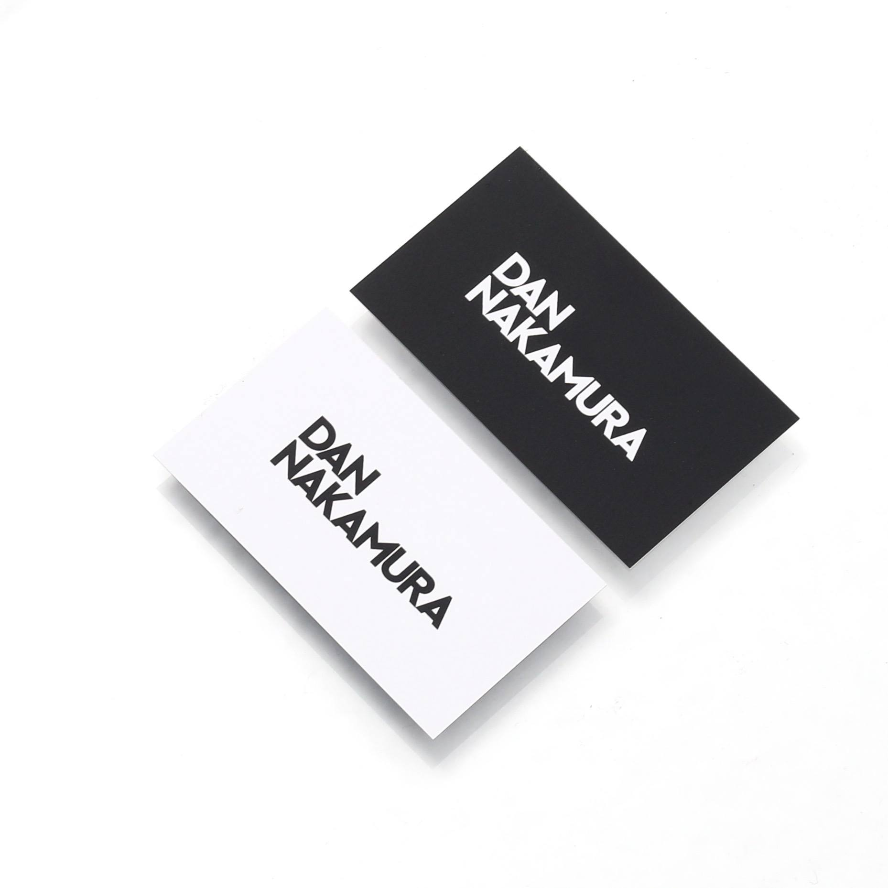

1995年佐賀県生まれ。
高校一年生/16歳で世界一周し、京都造形芸術大学空間演出デザイン学科空間デザインコース卒業。
2015年時には世界経済フォーラム（ダボス会議）、「World Economic Forum - Global Shapers Community」メンバーに選出される。
2016年には株式会社DAN NAKAMURAを設立し、自身初となるファッションショー、「sustainable clearness crocodile」を渋谷ヒカリエホールにて開催。
2017年、同コレクションがニューヨークのアートギャラリーにて展示開始される。
©2018 DANNAKAMURA